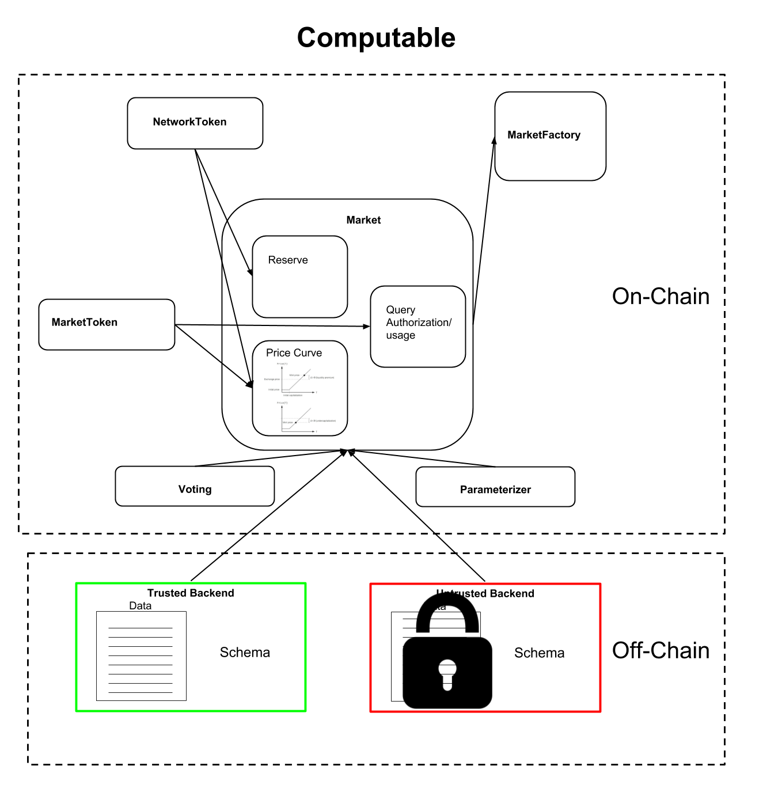

The Computable Protocol
Introduction
The Computable protocol creates decentralized data
markets. The global network is made up of many
individual markets. Each market conceptually holds a
single collection of data and is created and controlled
by the owners of this data. These owners could
correspond to existing organizations, or could be a
decentralized set of interested parties. The
coordination and access control for these individual
market instances is coordinated by a set of smart
contracts. Each market allows for a set of associated
financial operations. These operations allow interested
parties to invest in a particular Market or pay for the
ability to query the data associated with that Market.
To facilitate these transactions, each market has a
unique associated MarketToken.
Everything described above is implemented in a set of
smart contracts which currently live on the Ethereum
blockchain. The data itself doesn’t live on the smart
contracts. For one, datasets can be very large
(gigabytes, terabytes, petabytes, exabytes or more). It
would be infeasible to store such large collections of
data on existing smart contract systems. For this
reason, data lives “off-chain” in Datatrusts. A
Datatrust is software system that is responsible for
storing data and coordinating with on-chain permissions
layers. Note that many possible Datatrust
implementations are possible by different vendors or
groups, so long as each implementation responds to the
API specified within this document.
This document is a living, versioned specification. As understanding of the core aspects of the Computable protocol grows, this document will be updated accordingly.

 Aug 22, 2019
Aug 22, 2019
 Edit this page
Edit this page